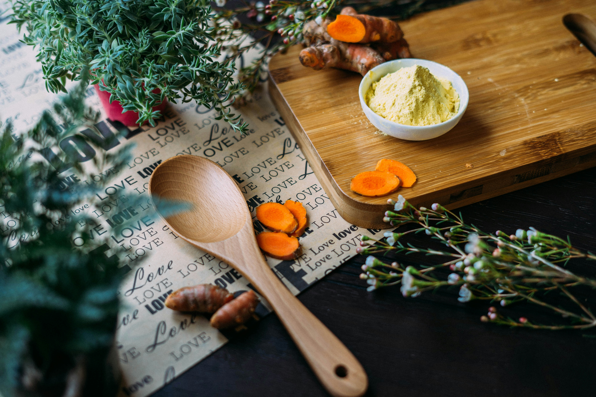

What is Cooking?
Cooking is something all people should master. Food is what links communities, countries and is what keeps the human race alive. Whether you’ve never picked up a recipe book before, or you’re a master in the kitchen. These recipes are perfect for all different cooking styles and abilities.
General Tips:
- Memorise the basics of the recipe before you start. This way you won’t be under the pump to measure ingredients if the recipe calls for you to act fast.
- Pre-Measure out your ingredients. If you measure out your ingredients before you begin cooking, you will have a much more organised work space and your ingredients will be measured out correctly. If you’re measuring fast to get an ingredient in the bowl, you could make a mistake, which will ruin the overall dish.
- Keep your kitchen clean. It’s much easier to cook if you’re working in a clean area. That way you aren’t tripping over things, losing things or getting your food contaminated with items you’re not meant to cook with.
Basic Starter Tools:
- Wooden Spoon. Wooden Spoons are used for mixing together ingredients, they can be used in almost all different recipes and are a staple when cooking.
- Rolling Pin. These are used for rolling stuff out flat, like dough. They are mainly used for recipes that include pasta, dough, pastry etc.
- Knife Set. This is pretty self-explanatory. No matter what you’re cooking you will need knifes, so it’s best to have a few stocked for when you need them!
- Baking Tin/Pans. These are used to cook dishes that need edges to contain what you’re cooking, like meats, cakes, vegetables etc.
- Cooking Pots/Pans. You use these on the stove to heat/cook recipe’s up. It’s also used to boil water, which is then used to cook food, like pasta, eggs, potato’s, vegetables. Hot water is also used to melt/cook delicate foods like chocolate and egg yolks (for recipes like hollandaise sauce) to ensure you don’t burn your ingredients.
- Measuring Tools. These are used to measure ingredients, to ensure you get the proper measurements. If you don’t measure your ingredients, your recipes won’t work.
- Bowls. These are used to mix ingredients. They are there to make sure whatever your mixing stays contained and makes it easy to combine whatever you’re trying to combine.